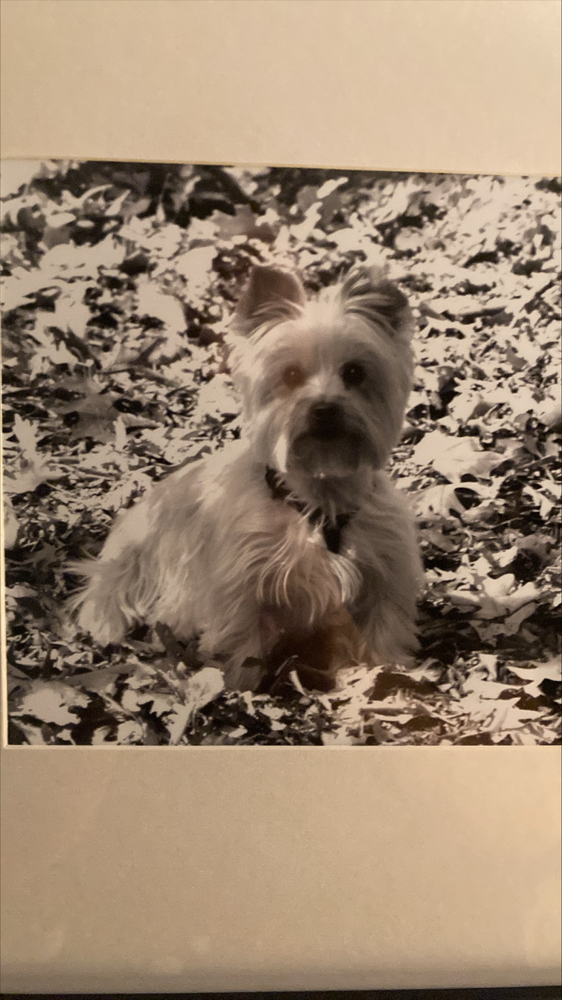

Here is just a random hodgepodge of neat things about me and what I've done.
Interests/Hobbies
A very applicable interest of mine is that I have had a lifelong interest in computers and how they function. In terms of other interests/hobbies I would say I have interests in music, film, history, and cooking.
Aspirations
In terms of what I want to achieve in the future, I have a lot of productive things I could see myself spending my time doing. However at the moment my goals are to get through college and secure a solid job. I want to get that figured out before anything else.
Pets
I have never been someone with a lot of pets, however there were a few. I won a goldfish at a county fair one year, it lasted about a week. I had grandparents who lived on a farm who owned cats and they said one of them was mine, really they just lived on the farm but I liked thinking I had a special relationship with one of them. But the most notable example of a past pet is that I had a dog named Molly when I was little. She was a small white shih tzu hybrid who lived for a fairly long time even though she passed when I was still fairly little.
